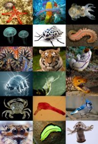
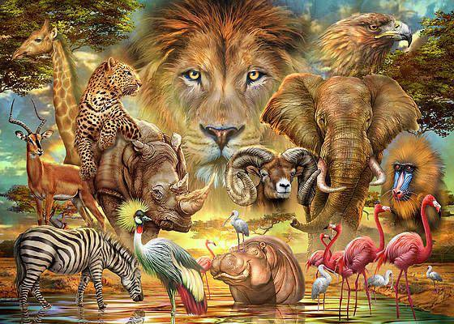
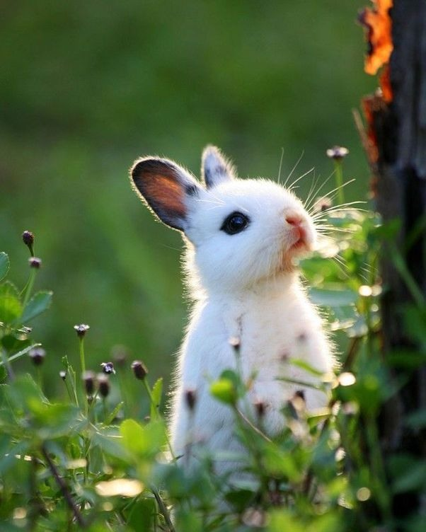

Hayvonlar turlariga qarab ularning kelib chiqishi Yovoyi va uy hayvolari yoki (o`t-ho`r) ga bo`linadi.Tabiatda va odam hayotida hayvonlar katta ahamiyatga ega. Hayvonlar — barcha ekosistemalarda oziqlanish zanjirining asosiy tarkibiy qismi. Hayvonlar oʻsimliklar bilan oziqlanib, oʻzlashtirgan moddalarining yana tuproqqa qaytarilishiga, binobarin oʻsimliklarning oʻsishiga imkon beradi. Oʻsimlik va hayvonlar qoldigʻi bilan oziqlanadigan hayvonlar Yer yuzini organik qoldiqlardan tozalab, tabiiy sanitarlik vazifasini bajaradi. Yirtqich hayvonlar tabiatda zararkunanda hayvonlarning sonini cheklab turishga yordam beradi. Hayvonlar odam hayotida ham katta ahamiyatga ega. Ulardan bir qancha turlari ovlanadi; uy hayvonlari goʻsht, sut, jun, teri va boshqa qishloq xoʻjaligi mahsulotlari olish maqsadida va transport vositasi sifatida boqiladi. Hayvonlar orasida qishloq xoʻjaligi, odam va hayvonlarga ziyon keltiradigan parazit turlari ham koʻp. Odam faoliyatining tabiatga taʼsiri tobora kuchayib borishi bir xil turlar sonining keskin qisqarib ketishiga olib keldi. Ayrim maʼlumotlarga koʻra hozirgi davrda har kuni hayvonlarning bitta turi yoʻqolib bormoqda. Hayvonlarni muhofaza qilish va ulardan foydalanish maqsadida deyarli barcha mamlakatlarda qonunlar qabul qilingan; maxsus qoʻriqxonalar tashkil etilgan. Oʻzbekiston Respublikasi Qizil kitobiga 184 hayvon turi kiritilgan.
  